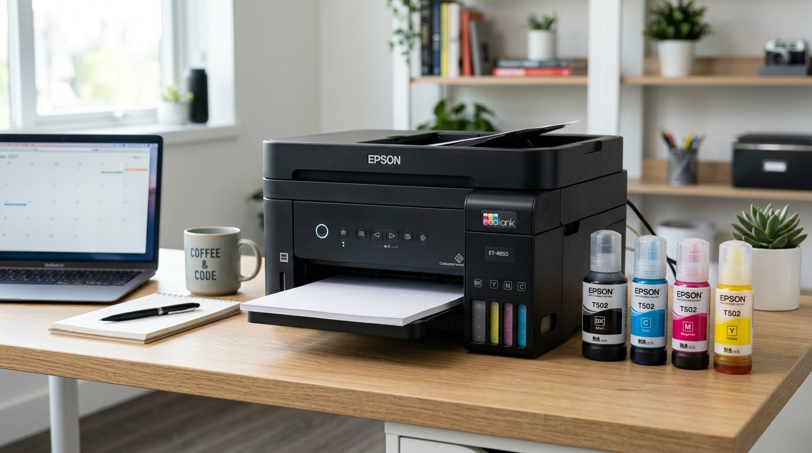

Reparación de impresoras y soporte técnico remoto en Bogotá
Impresoras de tinta continua y láser para casa y oficina, y ayuda inmediata por AnyDesk sin que tengas que moverte.

Reparación de impresoras en Bogotá
Ofrecemos reparación de impresoras en Bogotá para sistemas de tinta continua EcoTank y equipos láser de oficina. Solucionamos atascos de papel, líneas borrosas, almohadillas desbordadas y calibración de cabezales.
También damos soporte técnico remoto en Bogotá y a nivel nacional con AnyDesk: configurar impresoras en red, resolver errores de controladores y arreglar problemas de software al instante. Atendemos a domicilio y a empresas en Bogotá; escríbenos tu barrio o localidad para confirmar la cobertura.
Qué impresora tienes
Cada tecnología tiene sus fallas típicas. Esto es lo que revisa y repara Pedro.
Epson EcoTank y similares
Sistemas de tinta continua sin cartuchos: se recargan desde botellas.
- Cabezales bloqueados: diagnóstico y purga de la tinta seca de los conductos.
- Almohadillas desbordadas: limpieza y reinicio del contador.
- Líneas y colores desviados: limpieza del encoder y calibración de impresión.
HP, Canon y otras láser
Equipos de oficina con tóner que presentan manchas, atascos o impresiones pálidas.
- Fusor: revisión y reemplazo de la unidad dañada.
- Tambor y rodillos: limpieza del cilindro fotosensible y del alimentador de papel.
- Tóner: recarga de cartuchos.
Soporte técnico por AnyDesk
Asistencia en tiempo real, rápida y bajo tu supervisión directa en pantalla, esté donde esté.
- Tú autorizas la sesión con el número de AnyDesk y puedes terminarla cuando quieras.
- Qué se resuelve: impresoras en red, controladores, virus, licencias y fallas de software.
- Sin desplazamientos: funciona en Bogotá y en el resto del país.
¿Tu impresora no responde ahora mismo?
Escríbele a Pedro por WhatsApp con la marca y el modelo, y te dice si se resuelve por AnyDesk o si hay que revisarla en laboratorio.
Otras líneas
Mantenimiento y reparación
Limpieza, pasta térmica, optimización, reparación de fallas y upgrades de SSD, memoria y refrigeración.
Ver la líneaPC a la medida y GPU
Computadores armados según lo que haces y tu presupuesto, y asesoría para elegir tu tarjeta gráfica.
Ver la líneaSoftware y periféricos
Formateo, virus, licencias originales de Windows y Office, y teclados, ratones y monitores.
Ver la líneaÚltima parada: escríbele a Pedro
Cuéntale qué le pasa a tu equipo. Diagnóstico honesto y presupuesto claro, sin compromiso.